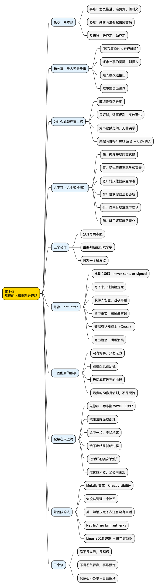

职场工具箱之事上炼：最难搞的人和事，是你最贵的一台压力测试机
Posted on 四 20 8月 2026 in Journal
| Abstract | 职场工具箱之事上炼：最难搞的人和事，是你最贵的一台压力测试机 |
|---|---|
| Authors | Walter Fan |
| Category | Journal |
| Version | v1.0 |
| Updated | 2026-08-21 |
| License | CC-BY-NC-ND 4.0 |
📋 大纲
1. 扎心场景：第四次改口，加一次会上甩锅 2. What：事上炼不是忍，是两本账 3. Why：为什么静时的功夫“实放溺也” 4. How：六不可清单 + 只攻一个点 + hot letter 5. 实战改写：群里被甩锅 / 反复改口的合作方 / 讨厌的人提了对的方案 / 一团乱麻的破事 6. 被架在火上烤：怎么自己搭个梯子下来（停顿 / 给下一步 / 还原成我们的问题） 7. 带团队的人：一次鼓掌值多少钱 8. 技术人特别容易踩的三个坑 9. 总结 + 行动清单 10. 思维导图 + 系列回顾一、扎心场景：第四次改口，加一次会上甩锅
周四晚上十点，你还在等对方部门的联调环境。
这已经是第四次了。第一次说接口周一给，周一变成“字段还要再确认一下”；第二次给了文档，联调发现字段名对不上；第三次你追到群里问，对方回一句“我们这边一直是这样的，你们没看文档吧”；这次干脆已读不回。
你打字，删掉，再打，再删掉。最后发出去的是：“好的，那我明天再对一下。”
发完你盯着屏幕，心里那句真话是：这人怎么这么难搞。
更要命的是第二天的复盘会。领导问进度为什么慢，对方 PM 先开口：“我们这边一直在配合，接口早就给了。”
那一瞬间的感觉很多人都熟悉——不是委屈，是一股火从后颈往上蹿，脑子里已经在组织语言了：四次改口的时间线一条条摆出来，截图，@所有人。
停在这儿。你面对的其实是两件事：一件是项目怎么按时交付，一件是你这股火怎么处理。
大多数人把第二件当成第一件的手段——好像把对方当众钉死，项目就能往前走。实际常常相反：你在会上赢得越漂亮，接下来两个月越难推。
而真正让人长本事的恰恰是第二件。顺境里人人都很有修养，脾气好不好看不出来。你的定力值几分钱，只有遇到难搞的人和事时才会暴露。罗马皇帝马可·奥勒留在《沉思录》开篇就给自己立了条晨间提醒：
“每天早上告诉自己：今天我将会遇到干扰、忘恩负义、傲慢无礼、背信弃义、心怀恶意和自私自利——所有这些，都源于冒犯者不知何为善、何为恶。”
一个统治半个已知世界的人，尚且要每天提醒自己今天会碰到烂人烂事。这不是消极，是把"遇到难搞"从意外降级成日程上的常规项——意外让你失态，日程不会。
这篇给一个工具，叫事上炼：不教你怎么忍，教你把这两件事分开算账——事要办完，心不能被带偏。
二、What：事上炼不是忍，是两本账
五百年前有人问过一模一样的问题。
王阳明的学生陆澄说：安静的时候我感觉自己修养挺好，一遇到事就完全不是那么回事了，怎么办？
问：“静时亦觉意思好，才遇事便不同。如何？”
先生曰：“是徒知静养，而不用克己工夫也。如此，临事便要倾倒。人须在事上磨，方立得住，方能‘静亦定，动亦定’。”
——《传习录·陆澄录》
翻译过来：你只知道打坐养静，没在克制自己上下过功夫，所以一碰到真事，人就站不住了。人必须在具体事情上磨，才立得住。
注意最后那半句——“静亦定，动亦定”。判断你有没有练成的标准不是“不生气”，是“生气的时候判断力还在不在”。 这两件事完全不同。
所以事上炼的操作定义很简单：
一件麻烦事，永远同时开两本账。 事账：这事怎么推进、谁负责、什么时候交。 心账：我在处理这事的过程中，判断有没有被情绪替换掉。
这两本账要分开记，也要分开算。事账算的是结果，心账算的是过程。很多人只记一本，于是有两种典型的失败：
| 只记事账 | 只记心账 | 两本都记（事上炼） | |
|---|---|---|---|
| 典型表现 | 为了推进不择手段，会上开撕、越级、找人施压 | 忍下来了，很有修养，但事情一直烂在那儿 | 事情按流程推，情绪单独处理 |
| 短期结果 | 这次可能赢了 | 心里憋着，看起来没事 | 慢一点，但走得动 |
| 半年后 | 没人愿意跟你合作，下个项目更难 | 事情没做成，还落个“老好人推不动事” | 事推动了，你也没树敌 |
| 练出来什么 | 越来越急躁，越来越依赖情绪推动 | 什么都没练到，只是压住了 | 静亦定，动亦定 |
中间那一列要多说一句，因为技术人最容易掉进去：忍不是克己。 忍是把火压回去存起来，存到某个不相干的场合再炸——回家对家人，或者在一次小得多的分歧上突然发作。压抑只是延迟，不是消化。
先分清：难搞的是人，还是事
回到开头，你脱口而出的是“这人怎么这么难搞”。但冷静下来会发现，真正折磨你的是那件推不动的联调——接口反复改口、没人拍板排期。那个 PM 也许确实不咋地，但换个和气的人来，只要接口没定义、责任没人认，这件事照样难搞。
我们常把"难搞的事"错记成"难搞的人"。 因为人有张脸、有语气，是情绪最方便的靶子；事是抽象的，没法冲它发火。于是大脑抄近道，把对烂摊子的憋闷转账到某个人头上。代价是解法跑偏：认定是"人"的问题，你就去搞定那个人（说服、绕过、斗倒）；其实该做的是改造那件事（补定义、定边界、加状态机）。
所以每次冒出"这人真难搞"，先问一句：
如果这件事换一个我很喜欢的人来做，它还难搞吗？
- "就不难了"——是人的问题，火有它的道理，但别把火烧到事上（场景 3）。
- "照样难"——是事的问题，你对人发的火找错了对象，要修的是接口和流程（场景 2）。
大多数职场里的"难搞"，拆到最后都是后者。人只是那件破事派来的信使。
补充：就算真是人的问题，也分两种——对方能力/上游确实有短板（结构性难搞），还是对方真在坑你（恶意难搞）。怎么区分、区分后怎么办，见本系列 抬轿子与撤梯子 那张判断表。
三、Why：为什么静时的功夫“实放溺也”
1. 顺境是没有区分度的考场
项目顺风顺水时，团队里所有人看起来都很有职业素养。一旦进度落后、责任不清、资源被抽走，差距立刻拉开——有人甩锅，有人摆烂，有人阴阳怪气，也有人还能坐下来把事一条条拆开。
难搞的人和事，是免费的压力测试。 平时你不知道自己的判断力在多大负载下会崩，只有它真崩过一次，你才知道阈值在哪儿。
而且这笔账不算在你头上。乔治城大学的 Porath 和 Pearson 在《哈佛商业评论》2013 年那篇 "The Price of Incivility" 里调查了 17 个行业 800 人，遭遇过同事无礼的人当中：80% 的工时花在反复琢磨这件事上，63% 花在躲着那个人，还有 48% 故意降低投入、38% 降低质量。思科自查后保守估算，职场无礼每年造成约 1200 万美元损失。
你在会上把人怼一顿，赢的是那三分钟，输的是对方接下来几周反刍和躲你的工时——这部分成本最后还是落回你的项目进度。事上炼不是道德要求，是成本核算。
2. 只在安静时修养，其实是一种放纵
王阳明对另一个学生陈九川说得更狠：
“人须在事上磨练，做功夫乃有益。若只好静，遇事便乱，终无长进。那静时功夫，亦差似收敛，而实放溺也。”
——《传习录·陈九川录》
“实放溺也”——看起来是收敛，实际是放纵沉沦。这话放今天，说的就是用学习代替行动那批人（包括我）：读了一堆情绪管理、正念冥想，笔记做得整整齐齐，感觉自己很稳了，然后周一早上一个消息进来，三分钟破功。因为那些功夫全是在没有对手时练的。没有阻力的练习，练的不是能力，是自我感觉。
3. 难事恰好是唯一的道场
同一段对话里还有一句，是《传习录》对上班族最友好的一句。有个下属说：学问是好，可我天天忙着审案子，没空做学问。王阳明答：
“我何尝教尔离了簿书讼狱，悬空去讲学？……簿书讼狱之间，无非实学。若离了事物为学，却是著空。”
——《传习录·陈九川录》
你手上那堆破事，就是你的道场。 没有另一个更清净的地方在等你——忙完这阵子还有下一阵子。而且他没喊完口号就走，给了下属一份具体清单，这份清单就是本文真正要给你的工具。
四、How：事上炼三个动作
动作一：先把两本账分开写
火起来的时候，最有效的第一个动作不是“冷静”——你叫自己冷静从来没冷静过——而是把两件事分开写下来。
拿张纸或者开个草稿，写两行：
事账：接口联调延期 3 周，需要对方本周五前给出确认版字段定义。
如果给不出，我方按现有版本 mock 联调，风险同步给双方主管。
心账：我现在想干的是在会上把他四次改口的记录摆出来。
这个动作对事账有帮助吗？—— 没有，只会让他下周更不配合。
那我为什么想干？—— 因为他刚才当众说“我们一直在配合”。
写到第三行你通常就已经降了一半温。原因很朴素：情绪最强的时候是它没被命名的时候。 一旦你把“我想让他难堪”这句话白纸黑字写出来，它就从一股劲儿变成了一个可以评估的选项，而这个选项经不起评估。
动作二：心账对着“六不可”过一遍
这就是王阳明给那个下属的清单。原文是关于断案的，讲的是审一个案子时有六件事不能干：
“如问一词讼，不可因其应对无状，起个怒心；不可因他言语圆转，生个喜心；不可恶其嘱托，加意治之；不可因其请求，屈意从之；不可因自己事务烦冗，随意苟且断之；不可因旁人谮毁罗织，随人意思处之。”
五百年后照抄不误，因为它抓住的东西没变：每一条都在用别的东西替换掉事情本身。
| 原文 | 职场版 | 你身上的样子 |
|---|---|---|
| 怒：不可因其应对无状，起个怒心 | 对方态度差，你就想赢这一局 | 回复的目标从“把事推进”变成“证明他错” |
| 喜：不可因他言语圆转，生个喜心 | 对方话说得漂亮，你就放松了审查 | 方案评审时，PPT 做得好的那份你没细问 |
| 恶：不可恶其嘱托，加意治之 | 讨厌他走后门，就故意为难他 | 他的 MR 你格外挑剔，他的需求你排最后 |
| 怜：不可因其请求，屈意从之 | 他说得可怜，你就违心答应 | 明知做不到的排期，你点了头 |
| 忙：不可因自己事务烦冗，随意苟且断之 | 自己太忙，就草率下结论 | “先这样吧”——把技术债和责任一起埋了 |
| 随：不可因旁人谮毁罗织，随人意思处之 | 听了别人说他坏话，你就跟着办 | 还没打过交道，你已经带着结论去了 |
六个字：怒、喜、恶、怜、忙、随。前三个是情绪，第四个是立场，后两个是偷懒。你越忙、越累、越在气头上，被替换的概率越高——而这三种状态，恰好就是难搞的人和事给你制造的状态。
所以心账的检查项只有一句话：
我这个决定，是从事实和目标推出来的，还是从这六个字里的某一个推出来的？
做重要判断前（回一封会连锁反应的邮件、投一个反对票、当众定责任归属），花二十秒扫一遍这六个字，命中哪个，就把决定推到明早。
我自己命中率最高的是"忙"和"恶"——事情一堆，一句"先这么着吧"就把该认真讨论的设计问题混过去了；对一个坑过我的合作方，我确实会不自觉把标准抬高半档。
动作三：只攻一个点，别全面开战
《二程遗书》里有一句话，我觉得是关于自我改造最实际的建议：
“多惊多怒多忧，只去一事所偏处自克，克得一件，其余自止。”（一作“其余自正”）
意思是：毛病一大堆，惊、怒、忧样样都有，别想着一起改。找你最偏的那一件先攻，攻下来其余自己就消停了。
放到职场：别立"我要做个情绪稳定的人"这种 flag，那是许愿不是计划。 找你最固定的那个触发点——大多数人只有一个，无非这几种：被当众质疑专业能力、被抢功或甩锅、话说一半被打断、同一件事解释第四遍、进度取决于一个你完全管不了的人。
先只盯一个，这周观察它出现几次、你怎么反应的。一件破了，其余会松，因为它们大概率是同一根神经上的分支。
补充：写那封你永远不发的信
上面三个动作都需要脑子在线，可发火那阵子恰恰脑子不在线。这时候最好用的办法，一百六十年前林肯就示范过。
1863 年葛底斯堡战役后，李将军残部被涨水的河拦在岸边，北军统帅米德却按兵不动，眼看李渡河跑了。林肯写了一封措辞极重的信斥责他（“你的黄金机会已经没了，我为此痛苦得难以估量”），写完却把它装进信封，在信封上写下一行字：
“To Gen. Meade, never sent, or signed.”（致米德将军，从未寄出，也未署名。）
这信躺在文件堆里，直到 1890 年秘书整理遗稿才发现，原件现存美国国家档案馆。后来发现这是林肯的固定习惯，这类信被称为他的 “hot letter”。
关键不在于林肯脾气好——恰恰相反，那封信写得毫不留情。他做对的是两件事：该说的狠话一个字没少写（没有压抑），但表达的对象是纸，不是米德（没有发送）。
这正好对上一个现代发现。斯坦福的 James Gross 研究情绪调节，区分两种策略：expressive suppression（把情绪硬憋回去）和 cognitive reappraisal（换个角度理解）。Richards 与 Gross 2000 年发在 JPSP 的三项研究结论反直觉：憋是有认知成本的——抑制组对当时的言语细节记忆明显更差，因为压抑要持续自我监控，在消耗你的认知资源；重评组则没有。翻译成人话：你在会上强忍不发作的那十分钟，其实没听清对方说了什么。这不是修养，是带宽被占用了。（边界：2025 年一项四千多人的重复研究显示，抑制损害言语记忆能稳定重现但效应量很小，d < 0.11；别把它当成"憋一次就变笨"。）
所以 hot letter 的现代版就四步：写下来（最狠那段完整打出来，让情绪走完）→ 收件人栏留空（物理上发不出去）→ 过夜（明早再看，你会删掉八成）→ 留下事实那部分（挑出能核实的事实和数字，重写成一封没有形容词的邮件）。
重点是最后一步。hot letter 不是把情绪扔进垃圾桶，是把情绪和事实分离——情绪留在草稿里，事实照发不误，你的时间线、风险提示、升级请求一条不少。
《二程遗书》有句话区分得好：“治怒为难，治惧亦难。克己可以治怒，明理可以治惧。”怒靠克制，怕靠搞清楚——你没法靠"想明白"消气，也没法靠"忍住"消除对未知的恐惧。前者要一个物理暂停（hot letter），后者要把事情摸清。
五、实战改写
场景 1：会上被当众甩锅
❌ 爆发版
“我这里有完整的时间线，7 月 12 号你们说周一给，7 月 19 号字段对不上，7 月 26 号我在群里问……”
在场所有人内心 OS：这两个部门掐起来了。 领导内心 OS：这俩人搞不定合作。
你可能全部说对了，但你把一个“进度问题”升级成了一个“人的问题”。而人的问题，领导只会记住有两个人麻烦。
❌ 闷声版
“嗯……我们再对一下。”
领导内心 OS：进度慢好像确实是这边的问题。
✅ 事账继续走，心账单独处理
“时间线我会后整理一份完整的发给大家，包括双方每次交付的节点，我们对着看一遍就清楚了。
现在更要紧的是往前推：我需要一个确认版的字段定义，本周五前。如果周五给不出来，我这边按当前版本 mock 起来先跑通，风险我同步到周报里。
张工你看周五这个时间可行吗？如果你那边有卡点，我们现在就说，我可以帮着一起去要。”
三个动作：不当场对质，但明确说了会有书面记录（事实不会消失）；把话题从“谁的错”拉回“怎么办”；给对方一个台阶，也给他一个可能的求助通道。
你心里那股火没消失，它只是被放到了会后——会后你该发的时间线照发，只是不带形容词。
场景 2：反复改口、说不清楚的合作方
这种最耗人，因为它没有一个可以爆发的爆点，就是一天一天地磨。
心账检查：这里最容易命中的是“恶”和“忙”——你开始默认他不靠谱，于是他说什么你都懒得细问，反正问了也白问。注意，这时候是你在放弃事账。
✅ 把口头协作改成有状态机的协作
“我理解你们那边字段还在讨论。我们换个方式：我建一个共享文档，把 12 个字段列出来，每个字段三个状态——已确认 / 讨论中 / 待定。
你们改一个我就同步一次，我这边按‘已确认’的先开发。这样你们不用等全部想清楚再给我，我也不用每次问全量。”
这段话的价值不在沟通技巧，在于它把一个靠人自觉的流程改成了一个有状态的流程。对付“难搞”的最有效手段，往往不是改造那个人，而是改造你和他之间的接口——降低对他的自觉性的依赖。
一句话：能用机制解决的，别用情绪解决；能用接口解决的，别用人品解决。
场景 3：你讨厌的那个人，提了一个对的方案
这个最考验人，因为它没有冲突，没有火，只有一个安静的时刻——你心里知道他说得对，但你不想承认。
命中的是“恶”那一条：不可恶其嘱托，加意治之。
❌ “这个思路可以，不过我觉得还有几个点没考虑到……”（然后开始找茬）
✅ “这个方案我同意，Redis 那层做得对。我补一个点：过期策略我们得定死，不然缓存不一致会很难查。”
差别只有一个：先明确地认同，再补充。 而不是用一句敷衍的“可以”开头，接着用“不过”把它推翻。
我认为这一条是六不可里最难的，也是最能看出一个人成色的。能在讨厌一个人的同时公开承认他对，这件事的含金量，比你在会上赢十次都高。 而且团队里所有人都看得见。
场景 4：不是人烦你，是事本身就是一团乱麻
前三个场景都有个具体的"人"在对面。但更常见、也更磨人的，是那种没有明确对手的破事：需求含糊、目标一天一样、边界谁都说不清、牵扯七八个团队，你越弄越乱，气却不知道往谁撒。
这种"难搞的事"最容易拖人进一种弥漫性的烦躁——不是对某个人的怒，是对整件事的无力。而无力容易变成两件坏事：要么摆烂（"反正理不清，先拖着"），要么乱抓（今天改这块明天推那块，看着很忙，其实原地打转）。这里命中的往往是"忙"——你放弃把它想清楚，改用体力硬扛。
解法不是"更努力地搞这团乱麻"，而是先把乱麻切成几段有边界的小事。乱之所以烦，是因为它是一整块、无从下手；切开后每段都可处理：
✅ 把一团乱麻切成有边界的几段
“这事范围太散，我先不急着动手，花半天拆一下：
一、列出所有牵扯的模块和团队，标清哪些必须、哪些是‘顺便’塞进来的。 二、把目标写成两三条可验收标准，发出去让相关方确认——不确认的不算这期范围。 三、剩下的按‘我能独立做的’和‘依赖别人的’分两堆，依赖那堆今天就把请求发出去。
拆完可能会发现，真正紧急的其实只有两三件。”
核心不是话术，是心态转变：面对难搞的事，第一反应不该是"赶紧动手"，而是"先停下把它变清楚"。乱麻里最贵的动作是切割，不是使劲拽。
一句话：难搞的人靠改造接口，难搞的事靠切出边界。 共同点是——都不靠你更用力地忍，而靠你把对象重新结构化。
六、被架在火上烤：怎么自己搭个梯子下来
前面几个场景，多半还有个能对话、能拆解的对象——哪怕一团乱麻，也能坐下来慢慢切。但还有一种压力完全不同，也更难受——不是有人惹你，是所有人都盯着你，等你当场交出一个你交不出的东西。
线上出故障，一屋子人等你报恢复时间；评审会上被一个没准备的问题问住；老板当众问"这个你负责，多久搞定"——你心里没底，但所有目光都在你身上。
这就是被架在火上烤。难点不在对方恶意（往往没有），而在三样东西同时压过来：公开（每个动作都被看着）、即时（都在等一个"现在"就要的答案）、不确定（要你承诺一个你并不掌握的东西）。默认反应几乎都是错的：要么逞强（拍胸脯给个自己都不信的承诺，把火挪到明天烧得更旺），要么僵住（支支吾吾，坐实"这人扛不住事"）。
事上炼在这里的用法，是给自己搭个体面的梯子下来——不是逃跑，是有台阶、有姿势地下到一个你站得住的位置。
第一步：先停顿，把“表演”降级成“处理”
被架上去那一刻，你有股强烈冲动要立刻说点什么，因为沉默让你觉得在出丑。恰恰相反——当众沉默三秒，比脱口而出一句蠢话专业得多。
1997 年 WWDC，重回苹果的乔布斯在问答环节被当众羞辱：
“乔布斯先生，你是个聪明且有影响力的人。（停顿，全场笑）但很遗憾也很明显，在你刚才讲的好几点上，你根本不知道自己在说什么……或许你还能告诉我们，你过去七年到底在干什么。”
乔布斯先接了一句"你知道，你可以取悦一部分人于一时……"，然后是一段长长的停顿。视频里能看到他在组织语言——那几秒他没反击，而是在决定回答哪个问题。接着他说："当你想推动改变的时候，最难的一点就是，像这位先生这样的人，在某些方面是对的。"然后把话题从"Java 和 OpenDoc"（他答不上、也没必要答的细节）拉到"你必须从用户体验倒推回技术"（他真正讲得好的问题），还补了句自嘲："生活中有很多事我也完全不知道自己在说什么，这点我也道歉。"
这段之所以经典，不是反击得漂亮，是他没反击。那个停顿是技术核心：它把一场"当众被羞辱、必须立刻还击"的表演，降级成一次"我来处理一个问题"的工作——压缩到三秒的"分开两本账"：心账（这人在羞辱我）搁一边，事账（问题里有没有值得答的）拎出来。
普通人的操作版：喝一口水（最不着痕迹的合法停顿，给你三五秒）；把问题复述一遍（"你问的是……对吧"——既争取了时间，又常能把情绪化的问题重述成中性的）；允许自己说"我想一下"（当众想三秒不丢人，说错话才丢人）。
第二步：区分“承诺”和“下一步”，只交后者
被架在火上时，对方要的往往是承诺（"明天能上线吗"），而你手上只够给一个下一步。逞强的人给承诺，因为承诺让场面好看，但一个你兑现不了的承诺，是往火里添一根明天必然烧到自己的柴。
线上故障最典型：
❌ 逞强版：“我看一下……应该问题不大，半小时能好。”（半小时没好，你从"救火的人"变成"还骗了大家半小时的人"。）
✅ 搭梯子版
“现在我还给不出准确恢复时间，给了也是瞎猜。我能给你的是：先做降级把影响控制住，10 分钟内有结果；同时拉一个人一起定位根因；15 分钟后同步一次进展，不管定位到没有都同步。”
它没给恢复时间那个承诺，但给了三个具体、可验证、短周期的下一步——你踩着"降级 / 定位 / 15 分钟同步"稳稳下到一个你控制得住的位置。而且更可信：故障刚发生就敢报精确恢复时间的人，要么在骗你，要么不懂。
一句话：给不出结果就给过程，给不出承诺就给下一次同步的时间。 一个明确的"我 15 分钟后再告诉你"，能瞬间给你 15 分钟喘息，还不掉价。
第三步：把“我”的问题，还原成“我们”的问题
被架在火上，一部分痛苦来自一个隐含设定：这事现在是你一个人的了。 但这设定往往是假的，可以合法地打破。回到老板当众问"多久搞定"：
✅ 既不推诿、也不独扛
“这个我来牵头。要给靠谱的时间，我得确认两件事：XX 组接口这周能不能到位，这个优先级是不是排当前迭代最前。这两件定了，我今天下班前给时间表；有一件卡住，我第一时间说。”
三件事：接住责任（我来牵头）、暴露依赖（不只取决于你）、给真实的下一步（下班前给时间表，而不是当场瞎报）。它把"你一个人能不能扛"还原成"我们这系统能不能按时交付"。这不是甩锅——你依然是牵头的——而是把不属于你一个人的部分诚实地摆回台面。
被架上去最危险的心态，是"所有人都看着我，我必须一个人接住"。 越是这种时刻，越要问一句：哪些是我真能控制的？只为那部分背书，其余当众、平静地交还给该负责的人和流程。
一个反直觉的收尾
被架在火上，感觉是最糟的时刻，其实是你职业信誉增值最快的时刻。顺境里没人看你，只有出事时所有人才真正观察你怎么反应。你在故障复盘会上稳住的那二十分钟，别人对你的判断，抵得上平时半年的表现。 王阳明"人须在事上磨"里最锋利的那部分，恰恰就是这些时刻。
所以下次感觉被架在火上，除了那股本能的慌，可以顺手记一句：这是一台免费的、全公司围观的信誉放大器——你稳，它替你放大稳；你慌，它也忠实地放大慌。
七、如果你是那个带团队的人：一次鼓掌值多少钱
前面讲的都是你作为当事人怎么办。如果你带团队，你还有一个更大的杠杆——你的一次反应，会定义整个团队敢不敢说真话。
2006 年 Alan Mulally 空降福特当 CEO，那年福特净亏 126 亿美元，史上最大年度亏损。他搞了个每周四的 Business Plan Review，高管用红黄绿三色汇报，结果连着几周满屏全绿。Mulally 终于打断会议：“我们今年要亏这么多，图表却全是绿的。你没法管理一个秘密（We can't manage a secret）。”
房间死一样安静——所有人都清楚，第一个亮红灯的，全家福中午前就得装进纸箱。然后北美区总裁 Mark Fields 举了红灯：新车型 Edge 出问题要推迟上市。Mulally 鼓掌了："Mark，这个可见度太棒了（Great visibility），谁能帮帮 Mark？"几秒内就有人主动提供跨部门支援。下一个周四，图表开始变成一片彩虹。Mulally 说这是福特扭亏最具决定性的一刻，后来福特成了三大车企里唯一没接受政府救助的。
关键在于：这一刻他本可以是另一种反应。 公司巨亏、一个高管说新车上不了市——按常理该发火，追问一句"怎么会这样？之前为什么没报？"也完全合逻辑。但那句话一旦出口，接下来两年不会再有人亮红灯。
所以带团队的人，心账上有条额外的检查项：我对坏消息的第一反应，决定了我下次还能不能收到坏消息。
| 第一反应别说 | 换成 |
|---|---|
| “怎么会这样？” | “谢谢你说出来。” |
| “之前为什么没报？” | “现在谁能帮上忙？” |
| “你当时是怎么想的？” | “我们下一步做什么？” |
追责的话不是不能说，是不能第一个说——第一句话说什么，团队记住的是那一句。
这和 Netflix 那条原则是一体两面。2009 年 Culture Deck 写着："Brilliant Jerks. Some companies tolerate them. For us, cost to effective teamwork is too high."（有才华的混蛋，有些公司容忍，对我们代价太高。）注意它承认了 brilliant——它算的是净值：你的技术价值，减去你制造的摩擦成本。 前面 Porath 那组数字（80% 工时反刍、63% 躲人）就是分子。一个技术很强但脾气很差的人，很可能是负的。
我们这行也有例子。2018 年 Linus Torvalds 在 LKML 公开道歉，承认"邮件里那些轻率的攻击既不专业也毫无必要"，宣布采用新的 Code of Conduct 并暂时退出去"学习理解别人的情绪"。信里有句很技术人的话："也许我可以搞个邮件过滤器，带脏字就不发出去。"——这看着像笑话，其实是正经思路：在你不可靠的地方加一道机器闸门，跟林肯信封上写"never sent"是同一个动作，一个用信封，一个用脚本。你的自控力不稳定，但你的流程可以稳定。
八、技术人特别容易踩的三个坑
坑 1：把“压住不发”当成修养。
你在群里回了一句“好的”，然后整个下午都在心里重放那段对话，晚上回家还在生闷气。这不叫克己，这叫延迟。真正处理完的标志是：你能平静地把这件事讲给第三个人听，而不需要论证自己是对的。 做不到，说明账还没结。
坑 2：把“事上炼”当成忍气吞声的借口。
这是最危险的误读。事上炼炼的是心账，不是让你放弃事账。该升级的要升级，该书面留痕的要留痕，该定的边界要定。
区别在于你是带着火去做，还是带着判断去做。同一封升级邮件，带着火写出来是控诉，带着判断写出来是风险同步——内容可能有八成一样，收到的人反应完全不同。
坑 3：只炼心，不办事。
修养很好，情绪很稳，项目黄了。
这就本末倒置了。王阳明说“簿书讼狱之间，无非实学”——重点是那个“事”字。心账是在办事的过程中顺手记的，不是拿事情当练心的材料。 事没办成，心炼得再好也只是自我感动。
顺序永远是：先把事办了，同时别让自己变形。
九、总结：难搞的人和事，是你唯一的道场
核心概念回顾
| 概念 | 一句话 |
|---|---|
| 事上炼 / 两本账 | 事账（怎么推进）和心账（判断有没有被污染）分开记。及格线不是"不生气"，是"生气时判断力还在" |
| 先分人还是事 | "换个我喜欢的人来还难吗"——还难就是事的问题。难人靠改造接口，难事靠切出边界，都不靠更用力地忍 |
| 六不可 | 怒、喜、恶、怜、忙、随，六个替换判断的东西，做重要判断前花二十秒扫一遍 |
| 只攻一点 | 找你最固定的那个触发点，先破一件，其余自止 |
| hot letter | 想发火时，把最狠那段写下来但收件人留空、过夜再看；情绪留草稿，事实照发（硬憋反而占带宽） |
| 被架在火上 | 先停顿（降级成处理）→ 给下一步不给承诺 → 把"我"的问题还原成"我们"的 |
| 带团队 | 对坏消息的第一反应，决定下次还能不能收到坏消息 |
| 最大的坑 | 忍不是克己；事上炼不是忍气吞声；只炼心不办事是自我感动 |
行动清单
- [ ] 想一下你手上最难搞的那个人或那件事，把事账和心账分两行写出来
- [ ] 对着它问一句“换个我喜欢的人来还难吗”，判断你真正该修的是人还是事
- [ ] 如果是一团乱麻的事，别急着动手，先花半天把它切成几段有边界的小事
- [ ] 把“怒、喜、恶、怜、忙、随”六个字存到手机备忘录，本周做重要判断前扫一遍
- [ ] 找出你最固定的那一个触发点，这周只观察它，记录出现了几次
- [ ] 下次想发火时，写一封 hot letter：写完、收件人留空、明早再看
- [ ] 下次被当众问住时，先喝口水或把问题复述一遍，给自己三秒；然后只交“下一步”，不交“承诺”
- [ ] 检查一下：有没有哪件事，你其实是在用“情绪”解决本该用“机制”解决的问题
- [ ] 这周找一次机会，公开认同一个你不喜欢的人说对的话
- [ ] 如果你带团队：下次听到坏消息，第一句话必须是“谢谢你说出来”
💡 一句话记住：安静时的稳，是没被测过的稳。你的修养和意志，只在难搞的人和事面前有读数。
思维导图
@startmindmap
<style>
mindmapDiagram {
node { BackgroundColor #FAFAFA }
:depth(0) { BackgroundColor #FFD700 }
:depth(1) { BackgroundColor #E3F2FD }
:depth(2) { BackgroundColor #F5F5F5 }
}
</style>
* 事上炼\n难搞的人和事就是道场
** 核心：两本账
*** 事账：怎么推进、谁负责、何时交
*** 心账：判断有没有被情绪替换
*** 及格线：静亦定，动亦定
** 先分清：难人还是难事
*** “换我喜欢的人来还难吗”
*** 还难＝事的问题，别怪人
*** 难人靠改造接口
*** 难事靠切出边界
** 为什么必须在事上练
*** 顺境没有区分度
*** 只好静，遇事便乱，实放溺也
*** 簿书讼狱之间，无非实学
*** 失控有价格：80% 反刍 + 63% 躲人
** 六不可（六个替换源）
*** 怒：态度差就想赢这局
*** 喜：话说得漂亮就放松审查
*** 恶：讨厌他就故意为难
*** 怜：他求你就违心答应
*** 忙：自己忙就草率下结论
*** 随：听了坏话就跟着办
** 三个动作
*** 分开写两本账
*** 重要判断前扫六个字
*** 只攻一个触发点
** 急救：hot letter
*** 林肯 1863：never sent, or signed
*** 写下来，让情绪走完
*** 收件人留空，过夜再看
*** 留下事实，删掉形容词
*** 硬憋有认知成本（Gross）
*** 克己治怒，明理治惧
** 一团乱麻的破事
*** 没有对手，只有无力
*** 别摆烂也别乱抓
*** 先切成有边界的小段
*** 最贵的动作是切割，不是硬拽
** 被架在火上烤
*** 先停顿：乔布斯 WWDC 1997
*** 把表演降级成处理
*** 给下一步，不给承诺
*** 给不出结果就给过程
*** 把“我”还原成“我们”
*** 信誉放大器，全公司围观
** 带团队的人
*** Mulally 鼓掌：Great visibility
*** 你没法管理一个秘密
*** 第一句话决定下次还有没有真话
*** Netflix：no brilliant jerks
*** Linus 2018 道歉 + 脏字过滤器
** 三个坑
*** 忍不是克己，是延迟
*** 不是忍气吞声，事账照走
*** 只炼心不办事＝自我感动
@endmindmap

系列回顾
职场工具箱系列，每篇一个工具，现学现用：
- 4D 总结法
- 黄金圈法则
- TNB 表达模型
- FAB 提案法
- STAR 面试法
- 同理心三方法
- 5W1H + 8C1D
- 艾森豪威尔矩阵
- PDCA 循环
- SMART 原则
- 领导力
- 逻辑树
- 解决问题五步法
- 5 个 Why
- 沟通四要素 CARE
- 金字塔原理
- 三点法
- DACI
- 四线复盘法
- RAPID
- 5S 问题处理法
- SWOT 自我定位
- AARRR 漏斗
- 第一性原理
- RACI
- 非暴力沟通
- SCAMPER
- MVP 思维
- ABC 情绪理论
- AI Agent 学职场英语
- 向上管理
- OODA 循环
- OKR
- MoSCoW 优先级
- RICE / ICE 评分
- 里程碑计划
- 验收标准 DoD
- 范围管理
- SBI 反馈法
- 困难对话
- BATNA 谈判
- 利益-立场拆分
- Radical Candor
- 抬轿子与撤梯子
- 事上炼（本篇）
扩展阅读
古籍原文
- 王守仁 ——《传习录》（维基文库·卷上、卷下），“人须在事上磨”出自陆澄录，断案“六不可”与“簿书讼狱之间，无非实学”出自陈九川录
- 《二程遗书》，“克己可以治怒，明理可以治惧”与“多惊多怒多忧，只去一事所偏处自克”
案例与研究
- Lincoln's Unsent Letter to George Meade（American Battlefield Trust），1863 年 7 月 14 日信件全文与信封上那句 “To Gen. Meade, never sent, or signed”；背景见美国国家档案馆新闻稿
- Richards, J. M., & Gross, J. J. (2000). Emotion Regulation and Memory: The Cognitive Costs of Keeping One's Cool. Journal of Personality and Social Psychology, 79(3), 410–424. 表情抑制损害言语记忆，认知重评不损害
- Porath, C., & Pearson, C. (2013). The Price of Incivility. Harvard Business Review, Jan–Feb. 17 个行业 800 人调查，80%/63%/48%/38% 那组数字的出处
- Ford Motor Company 2006 Annual Report，全年净亏 126 亿美元（媒体多按 127 亿报道）；Mulally 与 Mark Fields 那次 BPR 见 Bloomberg 2012 年报道
- Linus Torvalds, Linux 4.19-rc4 released, an apology, and a maintainership note, LKML, 2018-09-16
- Marcus Aurelius, Meditations, Book 2.1（Maxwell Staniforth 译本）："Begin each day by telling yourself: Today I shall be meeting with interference, ingratitude, insolence, disloyalty, ill-will, and selfishness."
- Steve Jobs, WWDC 1997 开发者问答现场应对当众羞辱（TIME 复盘，现场视频与逐字稿）——先停顿、承认对方在某些方面有理、再把问题换成自己能站住的那个
本站相关
- 本站 知之非艰，行之惟艰：重读“知行合一”，讲的是同一套功夫的另一面
- 本系列 ABC 情绪理论，处理“情绪从哪来”的认知层；本篇处理“情绪来了之后怎么办”的行动层
- 本系列 Radical Candor，与本文第七节“带团队的人”那部分互补
一条辟谣
- 广为流传的“情绪只持续 90 秒”（Jill Bolte Taylor 的 90-second rule）来自其个人中风康复经历的自述，并非对照研究结论，学界对其普适性有明确质疑，本文未采用。同样，“在刺激与回应之间有一个空间”那句常被安到 Viktor Frankl 头上的话，维克多·弗兰克尔研究所已明确澄清不是他写的——Stephen Covey 自述是在夏威夷某图书馆的一本书里读到，未记下作者
本作品采用知识共享署名-非商业性使用-禁止演绎 4.0 国际许可协议进行许可。